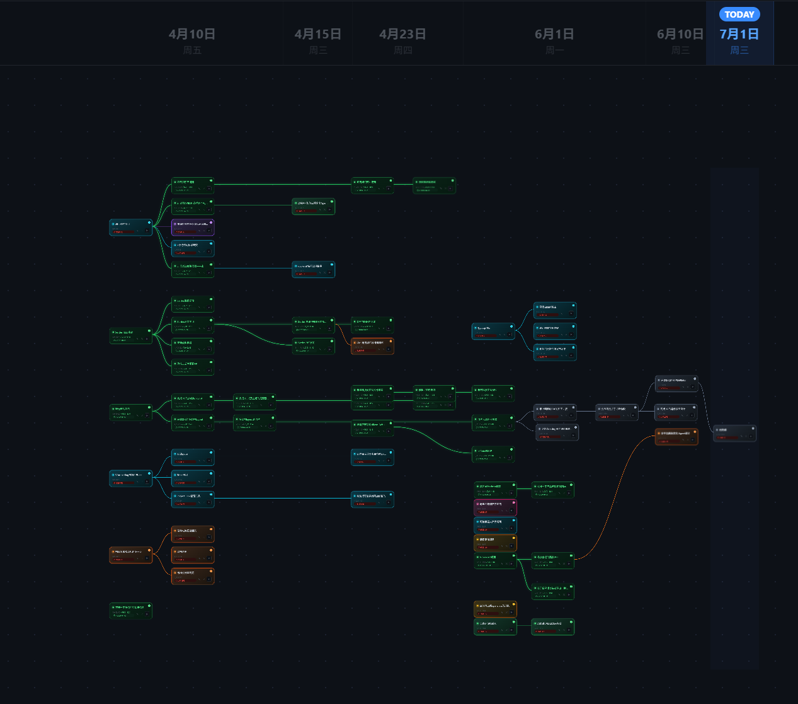

已上线独立产品开发
Project Flow
把复杂项目画成一张
可推进的时间地图。
为需要管理多条任务线的人设计。在可视化画布上安排项目节点、分支、截止日期与完成状态，让“接下来做什么”不再藏在长长的待办列表里。

产品仓库提供的真实界面用户能做什么
把计划拆成节点与分支，标记时间和状态；登录后保存自己的工作区，在本地与云端之间同步。
真正难在哪里
画布交互之外，还要处理本地/云端编辑冲突、按用户隔离数据，以及会员授权与支付回调的一致性。
我交付了什么
已上线官网和 Web 产品；实现 React 前端、Supabase 账号与数据服务，集成 Creem 授权与支付回调，具备可访问的官网和应用入口。